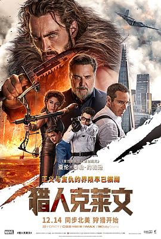

5.3
猎人克莱文
Kraven the Hunter
2024
美国
评分 5.3
导演:
J·C·陈多尔
演员:
亚伦·泰勒-约翰逊 / 罗素·克劳 / 阿丽亚娜·德博斯 / 克里斯托弗·阿波特 / 亚历桑德罗·尼沃拉 / 弗莱德·赫钦格 / 莱维·米勒
类型:
冒险,动作,奇幻
剧情简介
谢尔盖·克拉文诺夫从小生长在父亲的残酷训练下。父亲尼古拉（罗素·克劳 饰）是冷血的军火巨头，信奉弱肉强食。他要求儿子狩猎、杀戮、征服——任何失败都意味着羞耻。一次非洲草原狩猎中，少年谢尔盖被狮群重创、濒临死亡，却意外因狮血混入体内而觉醒了超凡感官与野兽般的力量。被父亲抛弃后，他化身“猎人克莱文”，以野性为信仰，游走黑暗世界。多年后，克莱文成为国际通缉的神秘猎手，追捕罪犯、猎杀掠夺者，但他的内心仍燃烧着复仇之火。当父亲卷入一项涉及基因武器与生态掠夺的阴谋时，他被迫重返故土。与此同时，科学实验催生的怪物“犀牛人”出现——这位被改造成生物兵器的前雇佣兵，成了克莱文的宿敌，也揭开了父亲试图控制“超生物进化链”的秘密。影片以浓烈的视觉风格与野性美学展现出猎人与兽的镜像关系：克莱文以猎人之名，却对被猎之兽充满敬意；他摧毁陷阱、释放动物，却也在杀戮中逐渐成为父亲的影子。浓雾中的追踪、利刃破风的质感、雨夜血战的节奏，使整部影片兼具动物性张力与人性反思。在高潮段落，克莱文闯入父亲的实验塔，与犀牛人展开生死对决。玻璃碎裂间，父与子、猎人与猎物、力量与信念的界限彻底崩塌。克莱文最终放下枪械，以赤手战斗的方式结束父辈的暴力循环。影片在暴烈与悲怆之间收束成一句话：“猎人不是杀戮者，而是守护自然秩序的人。”